# Mount Google Drive
from google.colab import drive
drive.mount('/content/drive')Mounted at /content/drive


Model selection in Machine Learning refers to selecting one final model for a given task, e.g., a model that will be deployed in production. In general, selecting the “best” final model should be based not only on the obtained values of relevant performance metrics (accuracy, specificity, sensitivity), but also based on other considerations, such as computational expense, available resources, model complexity, maintainability, and similar factors.
An important phase in selecting a candidate ML model is hyperparameter tuning. Hyperparameters (also called tuning parameters) are a set of values that control the model’s complexity and performance, and they are chosen (tuned) by the user. Note again that the parameters (weights) of an ML model are updated iteratively during training, whereas the hyperparameters stay constant and are not updated during training.
In the lecture on scikit-learn, we studied hyperparameter tuning of conventional ML models (such as Linear Regression, k-Nearest Neighbors, Decision Trees, etc.). For this purpose, we used Grid Search and Random Search to explore different combinations of hyperparameter values and to select an optimal set of values for a given performance metric. In our introductory lectures on Artificial Neural Networks (ANNs), we haven’t discussed yet how to tune their hyperparameters. That question remained hanging in the air of the pleasant autumn evenings, and it will be the focus of this lecture. Namely, ANNs are more sensitive to hyperparameter tuning than conventional ML models. We saw that even if we use default values for the models in scikit-learn without any hyperparameter tuning, the models can still achieve solid performance. This is rarely the case with ANNs, as they usually require at least some hyperparameter tuning.
Another important aspect of model selection is performance evaluation. It can involve exploring various techniques for data preprocessing (e.g., different feature scaling and encoding techniques) and evaluating different feature engineering strategies (e.g., techniques for filling missing data). In addition, it is particularly important to evaluate candidate models on unseen data during training, which is typically achieved by splitting the available data into training and test datasets. We also learned that k-fold cross-validation can be used to draw folds from the available data, and evaluate the models on multiple folds by resampling the available data. With k-fold cross-validation, each data point appears in only one test fold when evaluating model performance.
Finally, note that hyperparameter tuning should not be confused with model fine-tuning which refers to transfer learning from a model that is pretrained on a large dataset and fine-tuning its parameters on a smaller domain-specific dataset.
Let’s examine again the ConvNet that we used in a previous lecture to classify images in the CIFAR-10 dataset, and identify the hyperparameters of the model.
# define the layers in the model
inputs = Input(shape=(32, 32, 3))
conv1a = Conv2D(filters=32, kernel_size=3, padding='same')(inputs)
conv1b = Conv2D(filters=32, kernel_size=3, padding='same')(conv1a)
pool1 = MaxPooling2D()(conv1b)
conv2a = Conv2D(filters=64, kernel_size=3, padding='same')(pool1)
conv2b = Conv2D(filters=64, kernel_size=3, padding='same')(conv2a)
pool2 = MaxPooling2D()(conv2b)
conv3a = Conv2D(filters=128, kernel_size=3, padding='same')(pool2)
conv3b = Conv2D(filters=128, kernel_size=3, padding='same')(conv3a)
pool3 = MaxPooling2D()(conv3b)
flat = Flatten()(pool3)
dense1 = Dense(128, activation='relu')(flat)
dropout1 = Dropout(0.25)(dense1)
dense2 = Dense(64, activation='relu')(dropout1)
dropout2 = Dropout(0.25)(dense2)
outputs = Dense(10, activation='softmax')(dropout2)
# define the model with inputs and outputs
cifar_cnn = Model(inputs, outputs)
# compile the model
cifar_cnn.compile(optimizer=Adam(learning_rate=1e-3), loss='sparse_categorical_crossentropy', metrics=['accuracy'])
# train the model
cifar_cnn.fit(train_data, train_label_onehot, epochs=10, batch_size=128)Hyperparameters in the above model include:
There can be other hyperparameters depending on the network, however, one immediate observation is that neural networks have a large number of hyperparameters, and tuning all hyperparameters can be challenging as it may take significant time and resources.
On the other hand, not all of the hyperparameters have significant impact on the performance of the model. Out of all hyperparameters, probably the most important is the learning rate, and in most cases, some tuning of the learning rate is required. In this lecture we will present techniques for hyperparameter tuning of a ConvNet model built with TensorFlow-Keras.
In previous lectures we worked with datasets that are built-in in Keras or scikit-learn and that can be directly loaded. Let’s look at loading a custom dataset that is not part of the popular ML libraries. The dataset is saved in a folder on my Google Drive, therefore I need to first mount the Google Drive in order to access the folder with the images.
For this lecture, we will use the LFW dataset (Labeled Faces in the Wild), which consists of about 5,000 images of 62 celebrities. The next cells load the dataset and plot a few images to make sure that the labels are correct.
# Mount Google Drive
from google.colab import drive
drive.mount('/content/drive')Mounted at /content/drive# Import packages
import numpy as np
import matplotlib.pyplot as plt
import tensorflow as tf
# Image utilities for loading and converting images to arrays
from tensorflow.keras.utils import load_img, img_to_array
# OS module for interacting with the operating system (paths, directories, etc.)
import os
# To list files in a directory
from os import listdir
# To read CSV files, since the labels are saved in a CSV file
import csv
# Natural sorting, to sort the image names in ascending numerical order
import natsort
# Print the version of TensorFlow
print("TensorFlow version:{}".format(tf.__version__))TensorFlow version:2.19.0# Path to the directory containing the dataset (you can download the dataset from Canvas and upload it to your Google Drive)
!unzip -uq 'drive/MyDrive/Data_Science_Course/Fall_2026/Lectures/Lecture_14-Model_Selection/data/LFW-dataset.zip' -d 'sample_data/'# Directories
train_dir = 'sample_data/LFW-dataset/Train/'
test_dir = 'sample_data/LFW-dataset/Test/'
val_dir = 'sample_data/LFW-dataset/Validation/'
labels_dir = 'sample_data/LFW-dataset/'
# Size of images (pixel width and height)
image_size = 100
# Function for loading the images
def load_imgs(path):
# List of all images in the folder
imgList = listdir(path)
# Make sure that the images are sorted in ascending order
imgList=natsort.natsorted(imgList)
# Number of images
number_imgs = len(imgList)
# Initialize numpy arrays for the images
images = np.zeros((number_imgs, image_size, image_size, 3))
# Read the images
for i in range(number_imgs):
tmp_img = load_img(path + imgList[i], target_size=(image_size, image_size, 3))
img = img_to_array(tmp_img)
images[i] = img/255.0
return images
# Call the above function to load the images as numpy arrays
imgs_train = load_imgs(train_dir)
imgs_test = load_imgs(test_dir)
imgs_val = load_imgs(val_dir)# Load the labels as numpy arrays
labels_train = np.genfromtxt(labels_dir + "train_labels.csv", delimiter=',', dtype=np.int32)
labels_test = np.genfromtxt(labels_dir + "test_labels.csv", delimiter=',', dtype=np.int32)
labels_val = np.genfromtxt(labels_dir + "val_labels.csv", delimiter=',', dtype=np.int32)# Display the shapes of train, validation, and test datasets
print('Images train shape: {} - Labels train shape: {}'.format(imgs_train.shape, labels_train.shape))
print('Images validation shape: {} - Labels validation shape: {}'.format(imgs_val.shape, labels_val.shape))
print('Images test shape: {} - Labels test shape: {}'.format(imgs_test.shape, labels_test.shape))
# Display the range of images (to make sure they are in the [0, 1] range)
print('\nMax pixel value', np.max(imgs_train))
print('Min pixel value', np.min(imgs_train))
print('Average pixel value', np.mean(imgs_train))
print('Data type', imgs_train[0].dtype)Images train shape: (3043, 100, 100, 3) - Labels train shape: (3043,)
Images validation shape: (1021, 100, 100, 3) - Labels validation shape: (1021,)
Images test shape: (1049, 100, 100, 3) - Labels test shape: (1049,)
Max pixel value 1.0
Min pixel value 0.0
Average pixel value 0.47390351913451484
Data type float64# Read the names of the celebrities in the dataset (there are 62 celebrities)
name_list = []
with open(labels_dir+'name_list.csv', 'r') as f:
reader = csv.reader(f)
for row in reader:
name_list.append(row[1])
# Plot a few images to check if the labels are correct
# There are a few bad images in the dataset, it needs to be cleaned
plt.figure(figsize=(9, 6))
for n in range(9):
i = np.random.randint(0, len(imgs_train), 1)
ax = plt.subplot(3, 3, n+1)
plt.imshow(imgs_train[i[0]])
plt.title('Label:' + str(name_list[labels_train[i[0]]]))
plt.axis('off')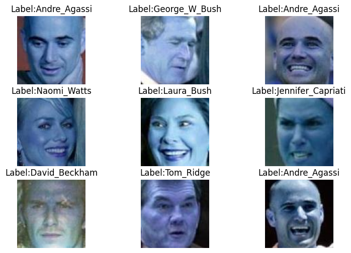
We will use a pretrained VGG-16 model, and we will just add a classifier with 3 Dense layers on top of the model to fine-tune it to the LFW dataset.
from tensorflow.keras.layers import Dense, GlobalAveragePooling2D, Dropout, Input, Flatten
from tensorflow.keras.models import Model
from tensorflow.keras.optimizers import Adam
from tensorflow.keras.callbacks import EarlyStopping, ModelCheckpoint, ReduceLROnPlateau, LearningRateScheduler
from tensorflow.keras.applications import vgg16
import datetime
now = datetime.datetime.nowdef Network():
base_model = vgg16.VGG16(weights='imagenet', include_top=False, input_shape=(image_size, image_size, 3))
# Add a global spatial average pooling layer
x = base_model.output
x = GlobalAveragePooling2D()(x)
# Add fully-connected layers
x = Dense(1024, activation='relu')(x)
x = Dropout(0.25)(x)
x = Dense(256, activation='relu')(x)
x = Dropout(0.25)(x)
# Add a softmax layer
predictions = Dense(62, activation='softmax')(x)
# The model
model = Model(inputs=base_model.input, outputs=predictions)
return modelLet’s define a function for plotting the accuracy and loss called plot_accuracy_loss, which we can call with different models to examine the learning curves.
def plot_accuracy_loss():
# plot the accuracy and loss
train_loss = history.history['loss']
val_loss = history.history['val_loss']
acc = history.history['accuracy']
val_acc = history.history['val_accuracy']
epochsn = np.arange(1, len(train_loss)+1,1)
plt.figure(figsize=(12, 4))
plt.subplot(1,2,1)
plt.plot(epochsn, acc, 'b', label='Training Accuracy')
plt.plot(epochsn, val_acc, 'r', label='Validation Accuracy')
plt.grid(color='gray', linestyle='--')
plt.legend()
plt.title('ACCURACY')
plt.xlabel('Epochs')
plt.ylabel('Accuracy')
plt.subplot(1,2,2)
plt.plot(epochsn,train_loss, 'b', label='Training Loss')
plt.plot(epochsn,val_loss, 'r', label='Validation Loss')
plt.grid(color='gray', linestyle='--')
plt.legend()
plt.title('LOSS')
plt.xlabel('Epochs')
plt.ylabel('Loss')
plt.show()In Lecture 12, we explained that most NNs employ a version of the Gradient Descent algorithm for updating the network parameters during training, depicted in the figure below. The learning rate determines the size of the updates at each step, i.e., it controls how fast the network parameters are updated.
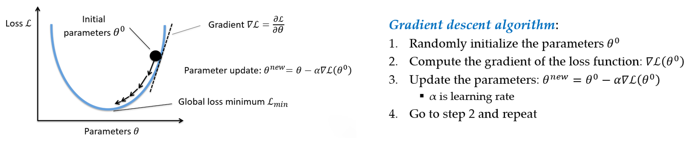
Figure: Gradient descent algorithm.
If the learning rate is too small, the algorithm will take many epochs to converge, and it may even get stuck into a local minima. If the learning rate is too high, the algorithm may jump over the best solutions and may not be able to converge to good solutions.
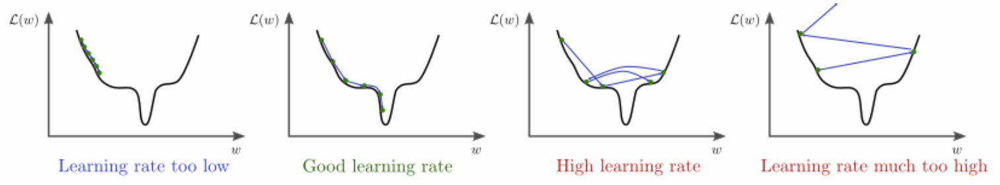
Figure: Impact of the learning rate. Source: https://www.bdhammel.com/learning-rates/
In the previous lectures, we used the following code to compile the models, which uses the Adam optimizer, but we didn’t specify the learning rate of the optimizer. For the implementation of Adam in Keras, the default learning rate is 1e-3.
model.compile(optimizer='adam',
loss='sparse_categorical_crossentropy',
metrics=['accuracy'])If we would like to use another value for the learning rate, then we will need to import the Adam optimizer, and compile the model with:
from tensorflow.keras.optimizers import Adam
model.compile(optimizer=Adam(learning_rate=VALUE),
loss='sparse_categorical_crossentropy',
metrics=['accuracy'])The following code trains a model for 10 epochs with a learning rate of 1e-4 = 0.0001. We have selected this learning rate because we know that it works well for this combination of model and data.
We can see that the model achieved close to 80% accuracy on the test set, and the training took about 3 minutes. From the plots of the accuracy and loss curves, we can tell that 10 epochs are not sufficient for training the model, because at the end of the 10th epoch, the accuracy was still increasing and the loss was decreasing.
LEARNING_RATE = 1e-4
EPOCHS_NUM = 10
# create a model
model = Network()
# compile the model
model.compile(optimizer=Adam(learning_rate=LEARNING_RATE), loss='sparse_categorical_crossentropy', metrics=['accuracy'])
# fit model
t = now()
history = model.fit(imgs_train, labels_train, batch_size=32, epochs=EPOCHS_NUM,
validation_data=(imgs_val, labels_val), verbose=0)
print('\nTraining time: %s' % (now() - t))
# evaluate on test data
evals_test = model.evaluate(imgs_test, labels_test, verbose=0)
print("Classification Accuracy: ", 100*evals_test[1])
# plot the accuracy and loss
plot_accuracy_loss()Downloading data from https://storage.googleapis.com/tensorflow/keras-applications/vgg16/vgg16_weights_tf_dim_ordering_tf_kernels_notop.h5 58889256/58889256 ━━━━━━━━━━━━━━━━━━━━ 3s 0us/step Training time: 0:02:57.097061 Classification Accuracy: 81.79218173027039
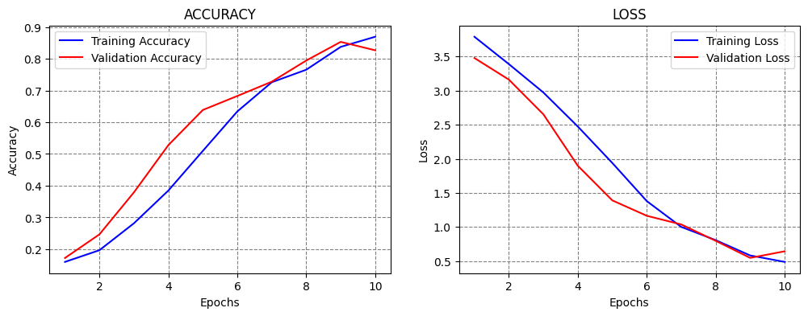
Let’s train the model for 30 epochs using the same learning rate to see if this number of epochs would be sufficient.
From the results below, we can see that the model achieved over 95% accuracy, and the training took about 7 minutes.
Based on the learning curves, at epoch 30 the validation accuracy and loss were converging to a plateau level, and it was unclear if training the model for more than 30 epochs would improve the performance. An alternative is to use Early Stopping callback, so that the training is stopped automatically (e.g., when the validation loss stops decreasing). Such case is shown in a subsequent section.
LEARNING_RATE = 1e-4
EPOCHS_NUM = 30
model = Network()
model.compile(optimizer=Adam(learning_rate=LEARNING_RATE), loss='sparse_categorical_crossentropy', metrics=['accuracy'])
# fit model
t = now()
history = model.fit(imgs_train, labels_train, batch_size=32, epochs=EPOCHS_NUM,
validation_data=(imgs_val, labels_val), verbose=0)
print('\nTraining time: %s' % (now() - t))
# Evaluate on test data
evals_test = model.evaluate(imgs_test, labels_test, verbose=0)
print("Classification Accuracy: ", 100*evals_test[1])
# plot the accuracy and loss
plot_accuracy_loss()
Training time: 0:07:49.475702
Classification Accuracy: 95.42421102523804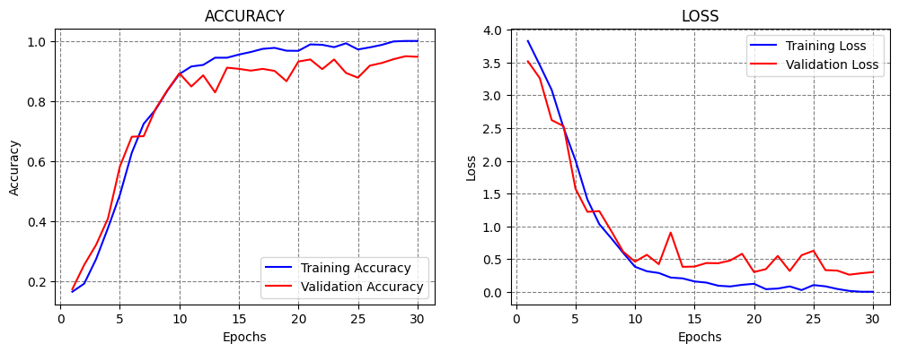
Next, let’s try to train the model using different learning rates, for instance, by increasing the learning rate to 1e-3 = 0.001.
Increasing the learning rate will cause the model to apply larger values for the update of the parameters during the training. We can expect that the training will converge faster, and we can use a smaller number of epochs.
However, large learning rates can cause the model to update the parameters too fast, as in this case. As we can see, the model achieved only 16% accuracy, and the accuracy curves did not improve after that level.
LEARNING_RATE = 1e-3
EPOCHS_NUM = 20
model = Network()
model.compile(optimizer=Adam(learning_rate=LEARNING_RATE), loss='sparse_categorical_crossentropy', metrics=['accuracy'])
# fit model
t = now()
history = model.fit(imgs_train, labels_train, batch_size=32, epochs=EPOCHS_NUM,
validation_data=(imgs_val, labels_val), verbose=0)
print('\nTraining time: %s' % (now() - t))
# Evaluate on test data
evals_test = model.evaluate(imgs_test, labels_test, verbose=0)
print("Classification Accuracy: ", 100*evals_test[1])
# plot the accuracy and loss
plot_accuracy_loss()
Training time: 0:05:06.832105
Classification Accuracy: 16.873212158679962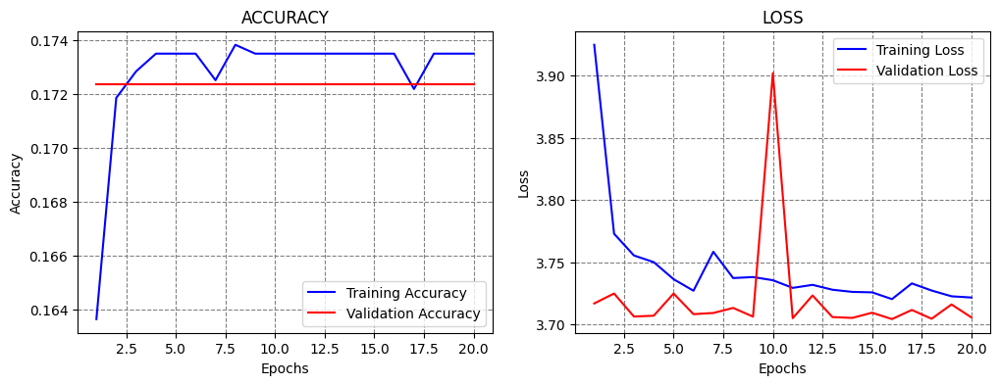
If we increase the learning rate even further to 0.01, we can expect that training will fail, since we saw that even a learning rate of 0.001 was too high. Based on the learning curves, we can tell that the learning is too fast and too aggressive.
LEARNING_RATE = 1e-2
EPOCHS_NUM = 10
model = Network()
model.compile(optimizer=Adam(learning_rate=LEARNING_RATE), loss='sparse_categorical_crossentropy', metrics=['accuracy'])
# fit model
t = now()
history = model.fit(imgs_train, labels_train, batch_size=32, epochs=EPOCHS_NUM,
validation_data=(imgs_val, labels_val), verbose=0)
print('\nTraining time: %s' % (now() - t))
# Evaluate on test data
evals_test = model.evaluate(imgs_test, labels_test, verbose=0)
print("Classification Accuracy: ", 100*evals_test[1])
# plot the accuracy and loss
plot_accuracy_loss()
Training time: 0:02:34.354941
Classification Accuracy: 16.873212158679962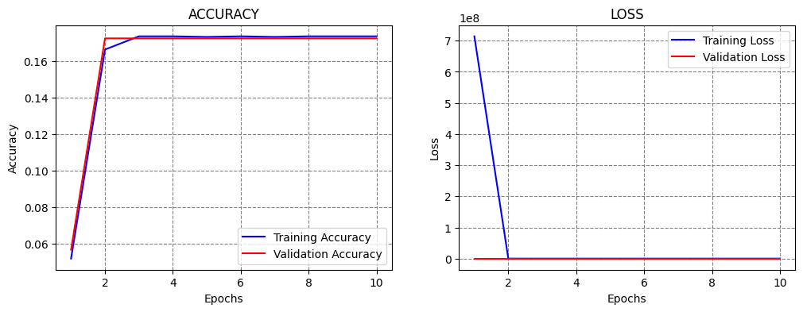
Let’s try the opposite case, and reduce the learning rate to 1e-5 = 0.00001. Smaller learning rates produce smaller updates of the model parameters, and slower learning. This may avoid the problems of learning too fast when large learning rates are used.
This model achieved slightly better accuracy than with the 1e-4 learning rate. Also, the learning curves look good, because the accuracy and loss gradually change, and the validation curves follow the training curves.
LEARNING_RATE = 1e-5
EPOCHS_NUM = 50
model = Network()
model.compile(optimizer=Adam(learning_rate=LEARNING_RATE), loss='sparse_categorical_crossentropy', metrics=['accuracy'])
# fit model
t = now()
history = model.fit(imgs_train, labels_train, batch_size=32, epochs=EPOCHS_NUM,
validation_data=(imgs_val, labels_val), verbose=0)
print('\nTraining time: %s' % (now() - t))
# Evaluate on test data
evals_test = model.evaluate(imgs_test, labels_test, verbose=0)
print("Classification Accuracy: ", 100*evals_test[1])
# plot the accuracy and loss
plot_accuracy_loss()
Training time: 0:13:05.483821
Classification Accuracy: 93.6129629611969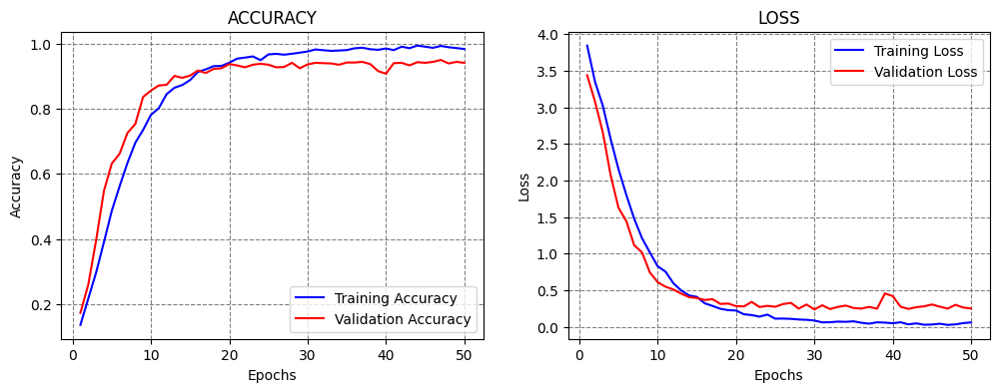
Next, let’s reduce the learning rate even further to 1e-6.
Although smaller learning rates avoid training failure when we use overly large learning rates, using very small learning rates does not necessarily lead to improved performance, since the learning can be too slow.
Based on the learning curves, we can tell that at the end of epoch 50 the model parameters were gradually being updated, and that with this learning rate we would need to train the model for at least 200 or 300 epochs to reach convergence, or maybe even more.
LEARNING_RATE = 1e-6
EPOCHS_NUM = 50
model = Network()
model.compile(optimizer=Adam(learning_rate=LEARNING_RATE), loss='sparse_categorical_crossentropy', metrics=['accuracy'])
# fit model
t = now()
history = model.fit(imgs_train, labels_train, batch_size=32, epochs=EPOCHS_NUM,
validation_data=(imgs_val, labels_val), verbose=0)
print('\nTraining time: %s' % (now() - t))
# Evaluate on test data
evals_test = model.evaluate(imgs_test, labels_test, verbose=0)
print("Classification Accuracy: ", 100*evals_test[1])
# plot the accuracy and loss
plot_accuracy_loss()
Training time: 0:13:00.788946
Classification Accuracy: 71.21067643165588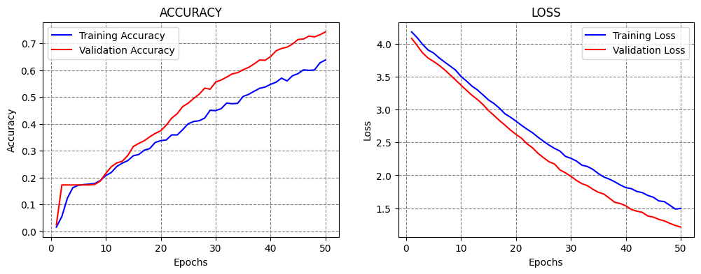
There are also several libraries developed for estimating the learning rate of NNs. These tools change the learning rate in a range of values, typically starting with a very small learning rate and increasing it to a high learning rate. The model is trained and evaluated only for a few epochs using different learning rates. Based on a plot of the loss for different learning rates, these tools can help to find a suitable learning rate, that can afterward be used to fully train the model. However, although such tools can identify a range of suitable values for the learning rate, they should be used with caution, and the users should still run candidate models in the suggested range to fully evaluate the model performance.
In the lecture on ConvNets we mentioned that callbacks can be used to monitor the model performance and take certain actions. The next section provides additional examples of applying callbacks in Keras.
As we know, using Early Stopping callback is often beneficial, since we don’t need to guess the optimal number of epochs to train the model. Instead, the callback will terminate the training when a selected metric is not improving. In the next cell, we specified to stop the training when the validation loss does not improve for 20 epochs (the patience argument). We set the EPOCHS_NUM argument to 1000, although we know that the model will terminate after about 50-60 epochs. Therefore, the number of epochs is not very important when we use this callback, it only needs to be large enough so that the training is not stopped prematurely.
This model achieved over 94% accuracy. Notice also in the accuracy curve that the accuracy in one of the latest epochs dropped a lot. We will see next how to handdle that case by using CheckPoint callback.
LEARNING_RATE = 1e-4
EPOCHS_NUM = 1000
model = Network()
model.compile(optimizer=Adam(learning_rate=LEARNING_RATE), loss='sparse_categorical_crossentropy', metrics=['accuracy'])
# fit model
t = now()
callbacks = [EarlyStopping(monitor='val_loss', patience=20)]
history = model.fit(imgs_train, labels_train, batch_size=32, epochs=EPOCHS_NUM,
validation_data=(imgs_val, labels_val), verbose=0, callbacks=callbacks)
print('\nTraining time: %s' % (now() - t))
# Evaluate on test data
evals_test = model.evaluate(imgs_test, labels_test, verbose=0)
print("Classification Accuracy: ", 100*evals_test[1])
# plot the accuracy and loss
plot_accuracy_loss()
Training time: 0:21:56.945756
Classification Accuracy: 92.56434440612793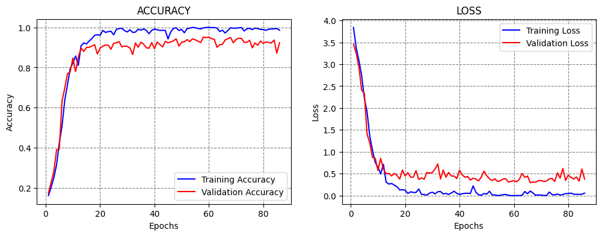
CheckPoint callback saves a checkpoint of the model (i.e., the model parameters) after every epoch when a monitored metric does not improve. We set the metrics to be the validation loss, and the values of the model parameters will be saved at the specified filepath. This can be useful if training the model takes hours, where if something goes wrong, we can just resume the training from a checkpoint.
We choose to set verbose=1 for the callback, to output the epochs at which a checkpoint is saved.
At the beginning of the training, the checkpoint will be saved after every epoch, and after the model reaches a plateau, a new checkpoint will be saved only when there is an improvement in the performance, by overwriting the latest checkpoint.
LEARNING_RATE = 1e-4
EPOCHS_NUM = 50
model = Network()
model.compile(optimizer=Adam(learning_rate=LEARNING_RATE), loss='sparse_categorical_crossentropy', metrics=['accuracy'])
# fit model
t = now()
callbacks = ModelCheckpoint(filepath='sample_data/model_celeb.weights.h5', monitor='val_loss', mode='min',
save_weights_only=True, save_best_only=True, verbose=1)
history = model.fit(imgs_train, labels_train, batch_size=32, epochs=EPOCHS_NUM,
validation_data=(imgs_val, labels_val), verbose=0, callbacks=[callbacks])
print('Training time: %s' % (now() - t))
# Evaluate on test data
evals_test = model.evaluate(imgs_test, labels_test, verbose=0)
print("Classification Accuracy: ", 100*evals_test[1])
# plot the accuracy and loss
plot_accuracy_loss()
Epoch 1: val_loss improved from inf to 3.63002, saving model to sample_data/model_celeb.weights.h5
Epoch 2: val_loss improved from 3.63002 to 3.14162, saving model to sample_data/model_celeb.weights.h5
Epoch 3: val_loss improved from 3.14162 to 2.69129, saving model to sample_data/model_celeb.weights.h5
Epoch 4: val_loss improved from 2.69129 to 2.38674, saving model to sample_data/model_celeb.weights.h5
Epoch 5: val_loss improved from 2.38674 to 1.86158, saving model to sample_data/model_celeb.weights.h5
Epoch 6: val_loss improved from 1.86158 to 1.60096, saving model to sample_data/model_celeb.weights.h5
Epoch 7: val_loss improved from 1.60096 to 1.30128, saving model to sample_data/model_celeb.weights.h5
Epoch 8: val_loss improved from 1.30128 to 1.01901, saving model to sample_data/model_celeb.weights.h5
Epoch 9: val_loss improved from 1.01901 to 0.90223, saving model to sample_data/model_celeb.weights.h5
Epoch 10: val_loss improved from 0.90223 to 0.66062, saving model to sample_data/model_celeb.weights.h5
Epoch 11: val_loss did not improve from 0.66062
Epoch 12: val_loss improved from 0.66062 to 0.59440, saving model to sample_data/model_celeb.weights.h5
Epoch 13: val_loss improved from 0.59440 to 0.56035, saving model to sample_data/model_celeb.weights.h5
Epoch 14: val_loss improved from 0.56035 to 0.49699, saving model to sample_data/model_celeb.weights.h5
Epoch 15: val_loss did not improve from 0.49699
Epoch 16: val_loss improved from 0.49699 to 0.44442, saving model to sample_data/model_celeb.weights.h5
Epoch 17: val_loss did not improve from 0.44442
Epoch 18: val_loss did not improve from 0.44442
Epoch 19: val_loss improved from 0.44442 to 0.40150, saving model to sample_data/model_celeb.weights.h5
Epoch 20: val_loss improved from 0.40150 to 0.35641, saving model to sample_data/model_celeb.weights.h5
Epoch 21: val_loss did not improve from 0.35641
Epoch 22: val_loss did not improve from 0.35641
Epoch 23: val_loss did not improve from 0.35641
Epoch 24: val_loss did not improve from 0.35641
Epoch 25: val_loss did not improve from 0.35641
Epoch 26: val_loss did not improve from 0.35641
Epoch 27: val_loss did not improve from 0.35641
Epoch 28: val_loss did not improve from 0.35641
Epoch 29: val_loss did not improve from 0.35641
Epoch 30: val_loss did not improve from 0.35641
Epoch 31: val_loss did not improve from 0.35641
Epoch 32: val_loss improved from 0.35641 to 0.35182, saving model to sample_data/model_celeb.weights.h5
Epoch 33: val_loss did not improve from 0.35182
Epoch 34: val_loss did not improve from 0.35182
Epoch 35: val_loss did not improve from 0.35182
Epoch 36: val_loss improved from 0.35182 to 0.30715, saving model to sample_data/model_celeb.weights.h5
Epoch 37: val_loss did not improve from 0.30715
Epoch 38: val_loss did not improve from 0.30715
Epoch 39: val_loss did not improve from 0.30715
Epoch 40: val_loss did not improve from 0.30715
Epoch 41: val_loss did not improve from 0.30715
Epoch 42: val_loss did not improve from 0.30715
Epoch 43: val_loss did not improve from 0.30715
Epoch 44: val_loss did not improve from 0.30715
Epoch 45: val_loss did not improve from 0.30715
Epoch 46: val_loss did not improve from 0.30715
Epoch 47: val_loss did not improve from 0.30715
Epoch 48: val_loss did not improve from 0.30715
Epoch 49: val_loss did not improve from 0.30715
Epoch 50: val_loss did not improve from 0.30715
Training time: 0:12:59.895580
Classification Accuracy: 92.37368702888489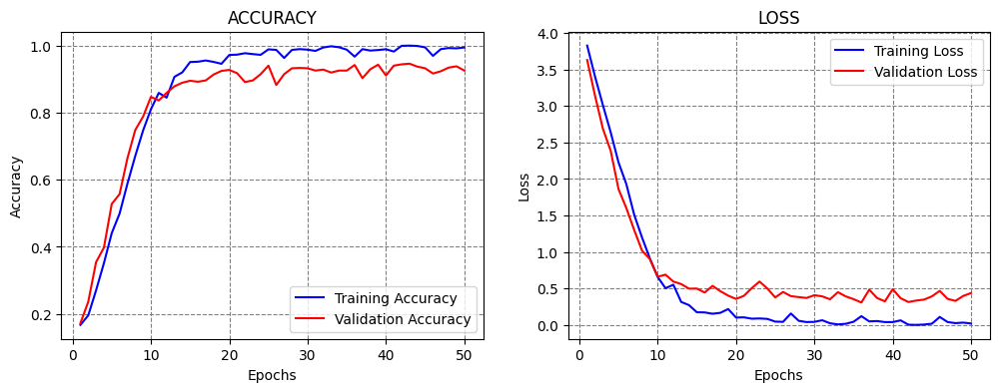
ReduceLROnPlateau stands for Reduce Learning Rate on Plateau. It is another very useful callback, since prior works have reported that training models generally benefits from using larger learning rate at the beginning of the training, and gradually reducing the learning rate when the training does not improve.
This is exactly what this callback does. In the next cell, the learning rate is initially set to 1e-4=0.0001. ReduceLROnPlateau has a patience of 10 epochs, factor of 0.1, and minimum learning rate of 1e-6. This means that when the monitored metric (in this case, the validation loss) does not reduce for 10 epochs, the learning rate will be multiplied by the factor and become 1e-5. When the model stops improving again, the learning rate will be again multiplied by the factor and become 1e-6. Since this is the minimum value for the learning rate, we will combine this callback with Early Stopping to terminate the training. Note that the patience value for Early Stopping was set longer than the patience for ReduceLROnPlateau.
LEARNING_RATE = 1e-4
EPOCHS_NUM = 1000
model = Network()
model.compile(optimizer=Adam(learning_rate = LEARNING_RATE), loss='sparse_categorical_crossentropy', metrics=['accuracy'])
# fit model
t = now()
callbacks = [EarlyStopping(monitor='val_loss', patience = 20),
ReduceLROnPlateau(monitor='val_loss', factor=0.1, patience=10, min_lr=1e-6, verbose=1)]
history = model.fit(imgs_train, labels_train, batch_size=32, epochs=EPOCHS_NUM,
validation_data=(imgs_val, labels_val), verbose=0, callbacks=callbacks)
print('\nTraining time: %s' % (now() - t))
# Evaluate on test data
evals_test = model.evaluate(imgs_test, labels_test, verbose=0)
print("Classification Accuracy: ", 100*evals_test[1])
# plot the accuracy and loss
plot_accuracy_loss()
Epoch 50: ReduceLROnPlateau reducing learning rate to 9.999999747378752e-06.
Epoch 60: ReduceLROnPlateau reducing learning rate to 1e-06.
Training time: 0:15:24.325223
Classification Accuracy: 95.71020007133484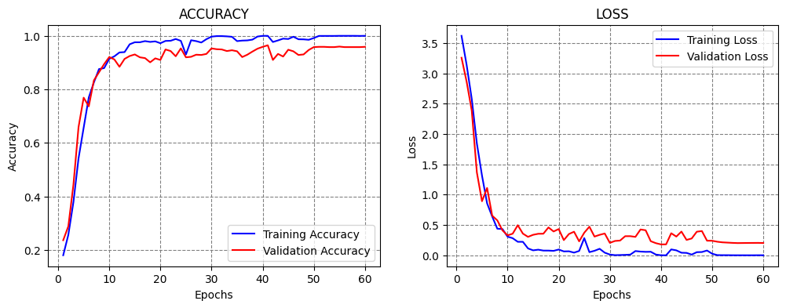
In the previous examples, we mostly used models with a constant learning rate, except in the ReduceLROnPlateau case where the callback reduced the learning rate automatically based on certain criteria (e.g., when the validation loss plateaued).
Learning Rate Scheduler allows to define custom schedulers that change the learning rate during training. This process of gradually reducing the learning rate over time is conceptually similar to annealing in metallurgy, which refers to heating and slowly cooling a metal to make it stronger or less brittle. Thus, reducing the learning rate is sometimes referred to as annealing, because the model is “cooled down” to refine its parameters and achieve better convergence.
Popular learning rate schedules are shown in the figure below:
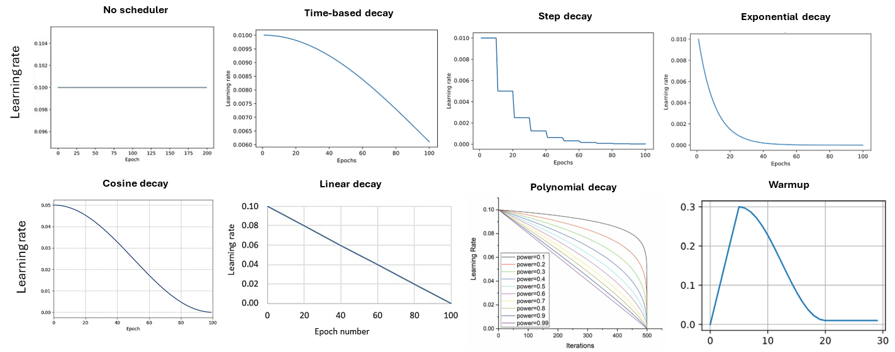
The following sections present codes that implement three of the above-listed learning rate schedulers.
This scheduler decreases the learning rate in each epoch by a given fixed amount. An example is shown in the next figure, where a model is trained for 100 epochs, and the learning rate is gradually reduced from 0.01 in the first epoch to 0.006 in the last epoch.
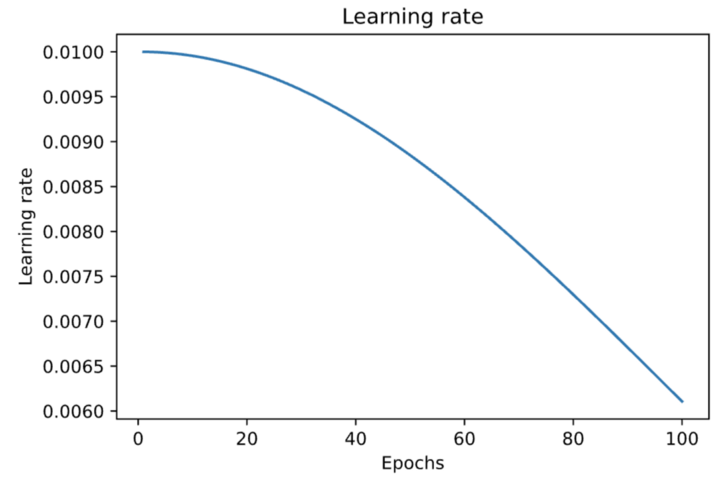
Figure: Time-based decay.
The implementation is shown below, where the Learning Rate Scheduler callback accepts a function which defines the schedule for the learning rate. The function lr_time_based_decay applies the decay amount at each epoch, where lr is the learning rate from the previous epoch. The value of the decay is usually set as the quotient of the initial learning rate and the number of epochs.
INITIAL_LEARNING_RATE = 1e-4
EPOCHS_NUM = 100
decay = INITIAL_LEARNING_RATE / EPOCHS_NUM
def lr_time_based_decay(epoch, lr):
return lr * 1 / (1 + decay * epoch)
model = Network()
model.compile(optimizer=Adam(learning_rate=INITIAL_LEARNING_RATE), loss='sparse_categorical_crossentropy', metrics=['accuracy'])
# fit model
t = now()
callbacks = [LearningRateScheduler(lr_time_based_decay, verbose=0)]
history = model.fit(imgs_train, labels_train, batch_size=32, epochs=EPOCHS_NUM,
validation_data=(imgs_val, labels_val), verbose=0, callbacks=callbacks)
print('\nTraining time: %s' % (now() - t))
# Evaluate on test data
evals_test = model.evaluate(imgs_test, labels_test, verbose=0)
print("Classification Accuracy: ", 100*evals_test[1])
# plot the accuracy and loss
plot_accuracy_loss()
Training time: 0:25:26.746135
Classification Accuracy: 94.85223889350891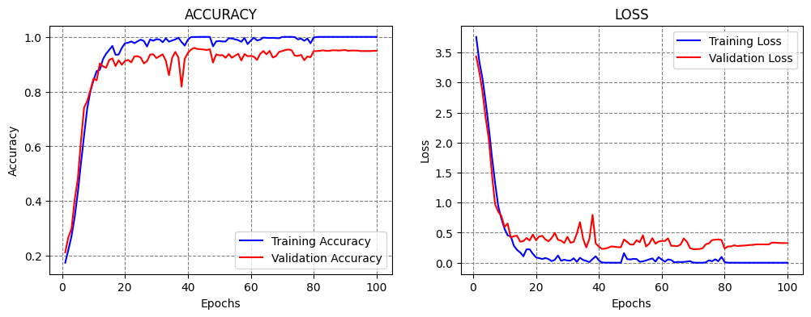
Step decay scheduler decreases the learning rate for a fixed amount after a number of training epochs. An example is shown in the figure, where the learning rate is reduced by half every 10 epochs.
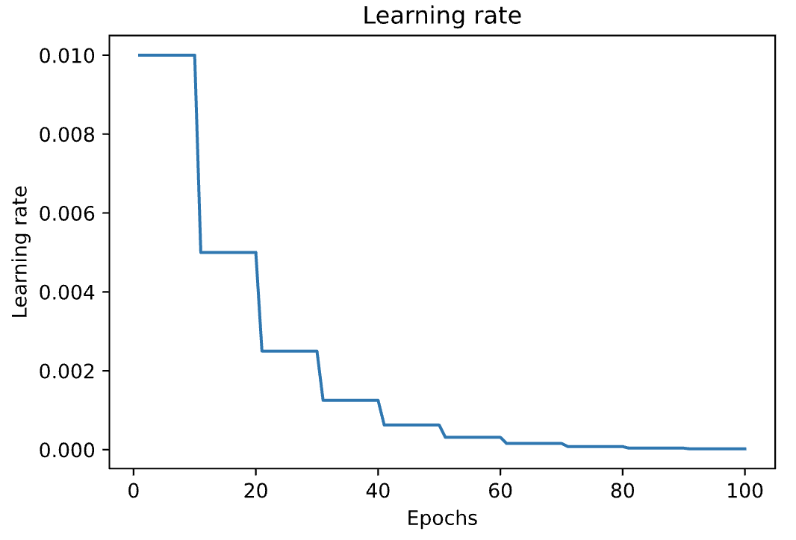
Figure: Step decay.
In the next cell, step decay is applied with the function lr_step_decay, where drop_rate is the reduced ratio of the initial learning rate at each step, and epochs_drop is set to 15 epochs.
import math
INITIAL_LEARNING_RATE = 1e-4
EPOCHS_NUM = 50
def lr_step_decay(epoch):
drop_rate = 0.5
epochs_drop = 15
return INITIAL_LEARNING_RATE * math.pow(drop_rate, math.floor(epoch/epochs_drop))
model = Network()
model.compile(optimizer=Adam(learning_rate=INITIAL_LEARNING_RATE), loss='sparse_categorical_crossentropy', metrics=['accuracy'])
# fit model
t = now()
callbacks = [LearningRateScheduler(lr_step_decay, verbose=0)]
history = model.fit(imgs_train, labels_train, batch_size=32, epochs=EPOCHS_NUM,
validation_data=(imgs_val, labels_val), verbose=0, callbacks=callbacks)
print('\nTraining time: %s' % (now() - t))
# Evaluate on test data
evals_test = model.evaluate(imgs_test, labels_test, verbose=0)
print("Classification Accuracy: ", 100*evals_test[1])
# plot the accuracy and loss
plot_accuracy_loss()
Training time: 0:12:53.993934
Classification Accuracy: 93.32697987556458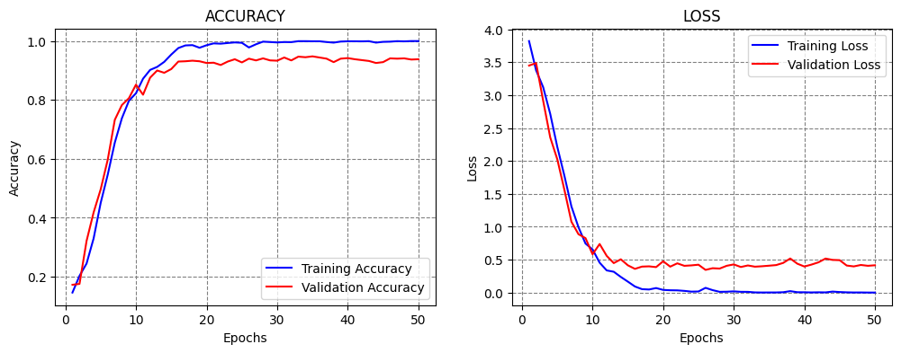
The scheduler decreases the learning rate at an exponential rate. In the cell below k is the rate of exponential decay.
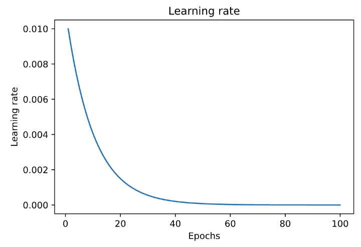
Figure: Exponential decay.
INITIAL_LEARNING_RATE = 1e-4
EPOCHS_NUM = 50
def lr_exp_decay(epoch):
k = 0.1
return INITIAL_LEARNING_RATE * math.exp(-k*epoch)
model = Network()
model.compile(optimizer=Adam(learning_rate=INITIAL_LEARNING_RATE), loss='sparse_categorical_crossentropy', metrics=['accuracy'])
# fit model
t = now()
callbacks = [LearningRateScheduler(lr_exp_decay, verbose=0)]
history = model.fit(imgs_train, labels_train, batch_size=32, epochs=EPOCHS_NUM,
validation_data=(imgs_val, labels_val), verbose=0, callbacks=callbacks)
print('\nTraining time: %s' % (now() - t))
# Evaluate on test data
evals_test = model.evaluate(imgs_test, labels_test, verbose=0)
print("Classification Accuracy: ", 100*evals_test[1])
# plot the accuracy and loss
plot_accuracy_loss()
Training time: 0:12:57.172125
Classification Accuracy: 92.65967607498169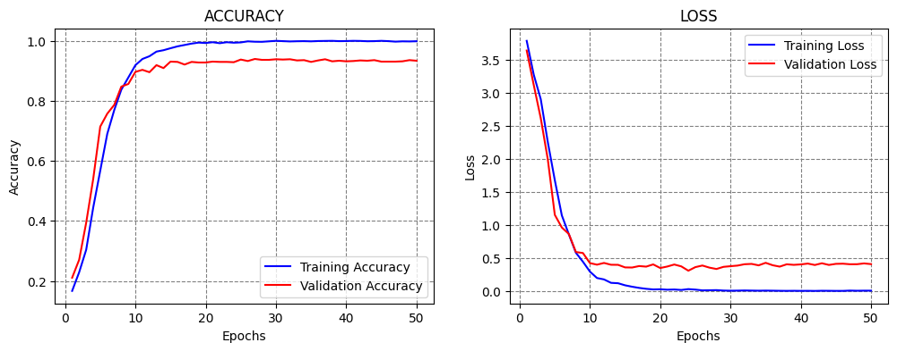
Applying Grid Search over the hyperparameters of neural networks that have long training times can be prohibitively computationally expensive. On the other hand, when working with smaller datasets and models, applying Grid Search for some of the hyperparameters can be an option.
This section presents a simple Grid Search over two hyperparameters in the model: number of neurons in the first Dense layer, and the batch size. We can simply write a function that takes as arguments these two hyperparameters, as in the next cell. Afterward, we can create a for-loop and train and evaluate a model for each combination of the values for the selected hyperparameters.
We examined 3 values for the number of neurons and 3 values for the batch size, resulting in 9 models. The results indicate that the model with 1,024 neurons and 128 batch size achieved the best performance. Consider that training each model took about 10 minutes, and evaluating 9 models took about 1.5 hours. Tuning a large number of hyperparameters over several different values can take a long time.
def Network(neurons_per_layer, batch_size):
base_model = vgg16.VGG16(weights='imagenet', include_top=False, input_shape=(image_size, image_size, 3))
# Add a global spatial average pooling layer
x = base_model.output
x = GlobalAveragePooling2D()(x)
# Add dense layers
x = Dense(neurons_per_layer, activation='relu')(x)
x = Dropout(0.25)(x)
x = Dense(256, activation='relu')(x)
x = Dropout(0.25)(x)
# Add a softmax layer
predictions = Dense(62, activation='softmax')(x)
# The model
model = Model(inputs=base_model.input, outputs=predictions)
# Compile
model.compile(optimizer=Adam(learning_rate=1e-4), loss = 'sparse_categorical_crossentropy', metrics = ['accuracy'])
# Fit
model.fit(imgs_train, labels_train, batch_size=batch_size, epochs=30,
validation_data=(imgs_val, labels_val), verbose=0)
# Evaluate on test data
_, test_acc = model.evaluate(imgs_test, labels_test, verbose=0)
return test_accneurons_per_layers = [512, 1024, 2048]
batch_sizes = [32, 64, 128]
for number_neurons in neurons_per_layers:
for batch_size in batch_sizes:
acc = Network(number_neurons, batch_size)
print(f"\nNumber of neurons: {number_neurons:<9} Batch size: {batch_size:<9} Test accuracy: {acc*100:6.3f}%")
Number of neurons: 512 Batch size: 32 Test accuracy: 91.802%
Number of neurons: 512 Batch size: 64 Test accuracy: 94.280%
Number of neurons: 512 Batch size: 128 Test accuracy: 94.566%
Number of neurons: 1024 Batch size: 32 Test accuracy: 92.946%
Number of neurons: 1024 Batch size: 64 Test accuracy: 93.327%
Number of neurons: 1024 Batch size: 128 Test accuracy: 94.090%
Number of neurons: 2048 Batch size: 32 Test accuracy: 87.607%
Number of neurons: 2048 Batch size: 64 Test accuracy: 93.899%
Number of neurons: 2048 Batch size: 128 Test accuracy: 94.566%There are several libraries developed for tuning the hyperparameters of neural networks. One is the Keras Tuner for tuning Keras models.
The Keras Tuner is somewhat similar to the Grid Search and Random Search in scikit-learn, and allows to define the search space for the hyperparameters over which the model will be fit, and it returns an optimal set of hyperparameters.
Keras Tuner is not part of the Keras package and it needs to be installed and imported.
pip install -q -U keras-tuner━━━━━━━━━━━━━━━━━━━━━━━━━━━━━━━━━━━━━━━━ 0.0/129.1 kB ? eta -:--:-- ━━━━━━━━━━━━━━━━━━━━━━━━━━━━━━━━━━━━━━━━ 129.1/129.1 kB 4.5 MB/s eta 0:00:00
import keras_tuner as ktTo demonstrate the use of the Keras Tuner we will work with the Fashion MNIST dataset.
(img_train, label_train), (img_test, label_test) = tf.keras.datasets.fashion_mnist.load_data()
# Normalize pixel values between 0 and 1
img_train = img_train.astype('float32') / 255.0
img_test = img_test.astype('float32') / 255.0Downloading data from https://storage.googleapis.com/tensorflow/tf-keras-datasets/train-labels-idx1-ubyte.gz 29515/29515 ━━━━━━━━━━━━━━━━━━━━ 0s 0us/step Downloading data from https://storage.googleapis.com/tensorflow/tf-keras-datasets/train-images-idx3-ubyte.gz 26421880/26421880 ━━━━━━━━━━━━━━━━━━━━ 2s 0us/step Downloading data from https://storage.googleapis.com/tensorflow/tf-keras-datasets/t10k-labels-idx1-ubyte.gz 5148/5148 ━━━━━━━━━━━━━━━━━━━━ 0s 0us/step Downloading data from https://storage.googleapis.com/tensorflow/tf-keras-datasets/t10k-images-idx3-ubyte.gz 4422102/4422102 ━━━━━━━━━━━━━━━━━━━━ 1s 0us/step
In the cell below, a function called model_builder is created, which performs search over two hyperparameters:
In the code, hp is an instance of the HyperParameters class provided by Keras Tuner. The line hp_units = hp.Int('units', min_value=32, max_value=512, step=32) defines a grid search for the number of neurons in the Dense layer in the range [32, 64, 96, …, 512].
Next, a grid search for the learning rate is defined in the range [1e-2, 1e-3, 1e-4].
def model_builder(hp):
# Define the input layer with the given shape
inputs = Input(shape=(28, 28))
# Flatten the input
x = Flatten()(inputs)
# Tune the number of units in the Dense layer, choosing between 32-512
hp_units = hp.Int('units', min_value=32, max_value=512, step=32)
x = Dense(units=hp_units, activation='relu')(x)
# Output layer with 10 units
outputs = Dense(10, activation='softmax')(x)
# Create the model using the functional API
model = Model(inputs=inputs, outputs=outputs)
# Tune the learning rate for the optimizer, choosing from 0.01, 0.001, or 0.0001
hp_learning_rate = hp.Choice('learning_rate', values=[1e-2, 1e-3, 1e-4])
# Compile the model
model.compile(optimizer=Adam(learning_rate=hp_learning_rate),
loss='sparse_categorical_crossentropy',
metrics=['accuracy'])
return modelThe Keras Tuner has four tuning algorithms available:
In the next cell, the Hyperband tuner is used, which has as the arguments the model, objective (metric to monitor), maximum number of epochs for each configuration of hyperparameters (training will be stopped for the worst-performing configurations after this number of epochs), and factor (used to search for top-performing models, e.g., a reduction factor of 3 means that one third of the configurations will be kept for the next iteration, and the rest of the configurations will be eliminated).
tuner = kt.Hyperband(model_builder,
objective='val_accuracy',
max_epochs=10,
factor=3)tuner.search(img_train, label_train, epochs=50, validation_split=0.2, callbacks=[EarlyStopping(monitor='val_loss', patience=5)])Trial 30 Complete [00h 00m 37s]
val_accuracy: 0.8877500295639038
Best val_accuracy So Far: 0.8915833234786987
Total elapsed time: 00h 08m 29s# Get the optimal hyperparameters
best_hps = tuner.get_best_hyperparameters(num_trials=1)[0]
print(f"Optimal number of neurons in the Dense layer: {best_hps.get('units')}")
print (f"Optimal learning rate: {best_hps.get('learning_rate')}")Optimal number of neurons in the Dense layer: 320
Optimal learning rate: 0.001Next, we will use the optimal hyperparameters from the Keras Tuner to create a model, and afterward we will evaluate the accuracy on the test dataset.
# Build the model with the optimal hyperparameters and train it on the data for 50 epochs
model = tuner.hypermodel.build(best_hps)
model.fit(img_train, label_train, epochs=50, validation_split=0.2, verbose=0)
eval_result = model.evaluate(img_test, label_test, verbose=0)
print("[test loss, test accuracy]:", eval_result)[test loss, test accuracy]: [0.6281461119651794, 0.8830000162124634]Other libraries that perform model selection, hyperparameter tuning, and neural architecture search include AutoKeras, auto-sklearn, Optuna, Auto-PyTorch and Ray Tune for PyTorch, AutoWEKA, Weights & Biases, and others.
AutoML or Automated Machine Learning refers to tools and libraries that are designed to allow non-ML experts to build Machine Learning systems and solve Data Science tasks without extensive knowledge in these fields.
AutoML systems range from automated No Code ML solutions that allow the end-users to just drag-and-drop their data, or Low Code systems that automate ML steps with minimal coding efforts, to systems that require coding experience and are designed to increase the efficiency of data scientists by automating hyperparameter tuning and architecture search.
Most large providers of cloud computing and ML services typically provide some form of AutoML services. Examples include Google AutoML, Microsoft Azure AutoML, Amazon SageMaker, etc.
In a subsequent lecture on training and deploying models on the Cloud, we will present examples of training ML models using No Code and Low Code modes with Microsoft Azure ML.